최신 묵상
하나님을 보다 — 부르심의 환상
이사야 6:1-13
웃시야 왕이 죽던 해, 이사야는 높이 들린 보좌 위에 앉으신 하나님을 보았습니다. 두려움 속에서 받은 부르심, 그 거룩한 만남의 현장.
모태에서 구별된 선지자 — 부르심과 두려움
예레미야 1:4-10
"나는 아이라 말할 줄을 알지 못하나이다" — 두려움으로 가득한 소년 예레미야에게 하나님이 손을 내미신 그 날의 이야기.
그발 강가의 환상 — 하나님의 영광을 보다
에스겔 1:1-28
바벨론 포로지 그발 강가에서 에스겔이 경험한 압도적인 하나님의 영광 — 네 생물과 바퀴들, 그 위에 펼쳐진 궁창과 보좌의 환상.

일곱 귀신에서 부활의 증인으로: 은혜의 완전한 반전
신약적 조명
가장 깊은 속박에서 가장 영광스러운 사명으로. 막달라 마리아의 삶이 우리에게 전하는 은혜의 완전한 반전 이야기.
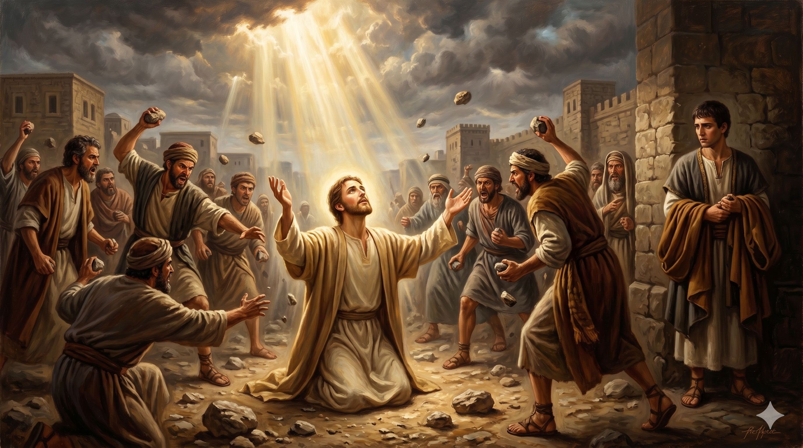
첫 순교자가 남긴 것: 용서와 복음의 씨앗
신약적 조명
용서와 복음의 씨앗을 뿌리고 떠난 스데반. 그의 순교가 초대교회와 오늘 우리에게 남긴 유산.
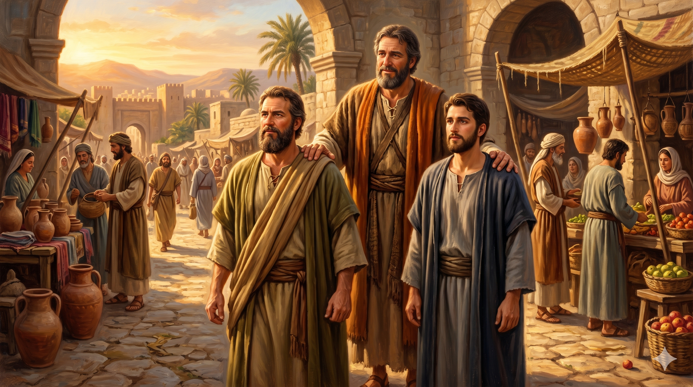
위로의 아들이 남긴 유산: 조용한 영웅의 신앙
신약적 조명
조용한 영웅 바나바가 초대교회와 오늘의 교회에 남긴 것. 격려하는 사람, 붙드는 사람, 내어주는 사람의 신앙.
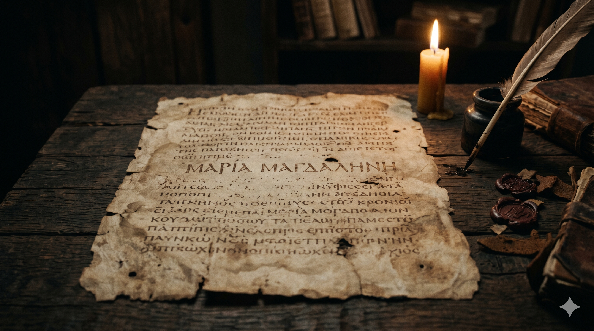
지워진 이름을 찾아서: 초대교회와 막달라 마리아
신약적 조명
초대교회 역사 속에서 막달라 마리아의 이름은 어떻게 전해졌는가. 신약과 초대교회를 통해 그녀의 진면목을 돌아봅니다.
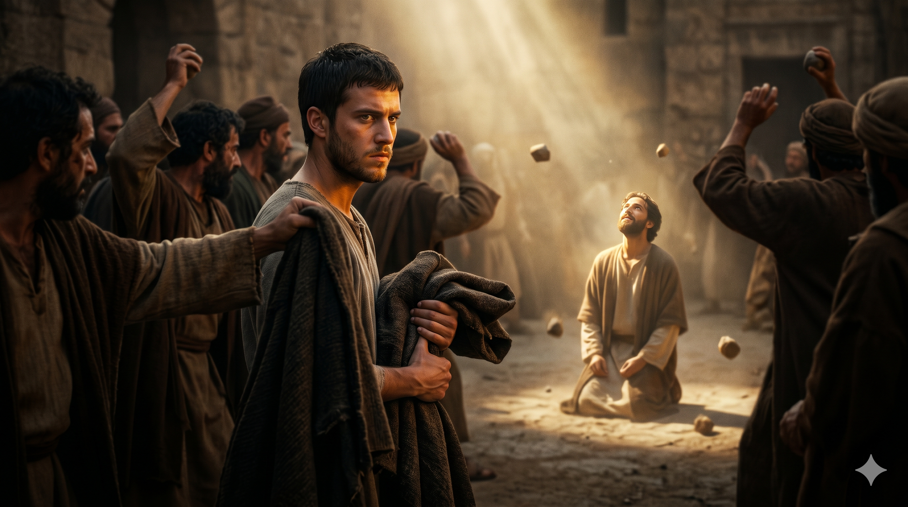
스데반의 순교와 바울: 한 죽음이 바꾼 역사
신약적 조명
스데반의 죽음을 지켜보던 사울이 훗날 가장 위대한 사도 바울이 됩니다. 한 죽음이 바꾼 역사의 흐름.
바나바와 마가: 두 번째 기회를 주는 사람
신약적 조명
포기했던 마가를 바나바가 붙들었고, 그 마가는 훗날 복음서를 기록합니다. 두 번째 기회를 주는 사람의 영향력.
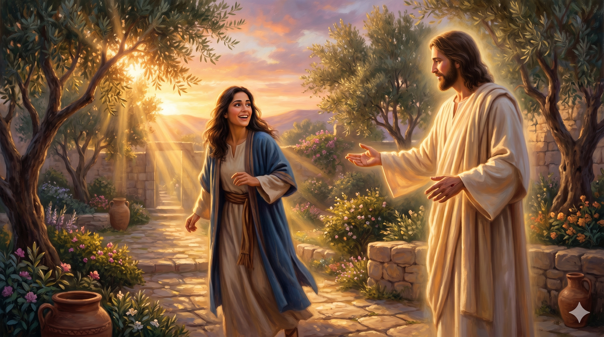
내가 주를 보았다: 부활의 첫 증인
요한복음 20:17-18
부활의 첫 증인이 된 막달라 마리아. 그녀는 달려가 제자들에게 전합니다 — "내가 주를 보았다"고.
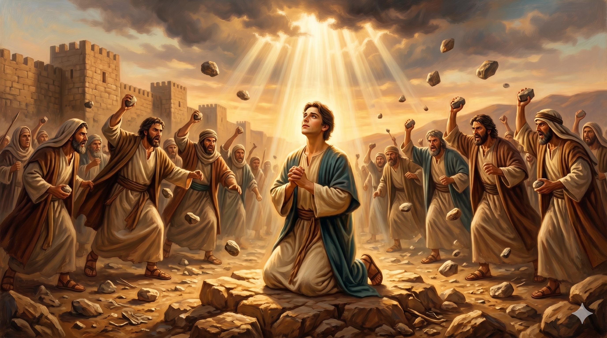
돌에 맞으면서도 기도한 사람: 순교의 순간
사도행전 7:57-60
돌이 쏟아지는 가운데 무릎 꿇고 기도한 스데반. 그의 마지막 말은 용서였습니다. 순교의 순간이 우리에게 가르치는 것.
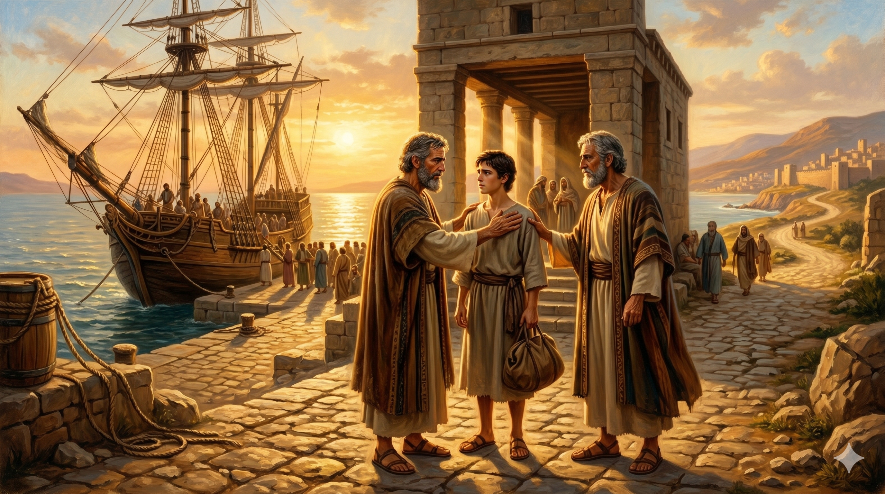
바울과의 결별: 마가를 붙들다
사도행전 15:36-41
마가를 데려가는 문제로 바울과 갈라선 바나바. 이 결별이 실은 두 선교팀의 탄생이었습니다.
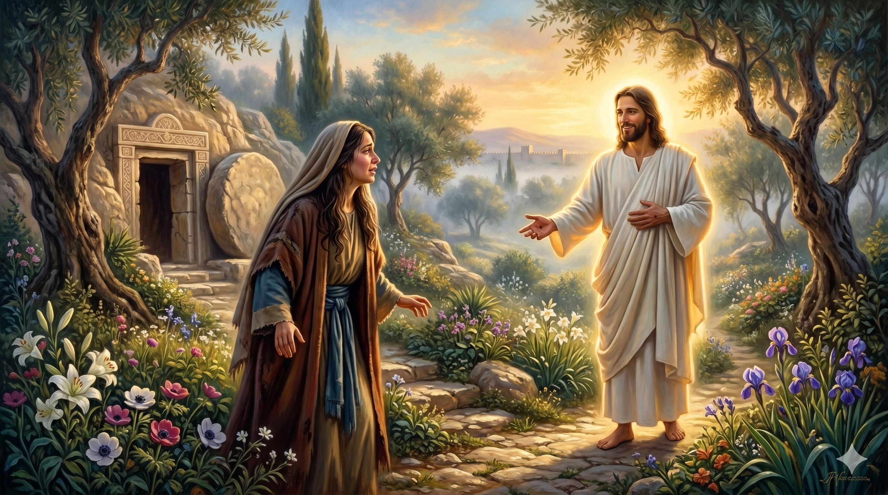
마리아야! — 이름을 불러 주신 분
요한복음 20:14-16
동산지기라 여겼던 그분이 "마리아야" 하고 이름을 부를 때 모든 것이 달라집니다. 부활하신 주님의 첫 마디.
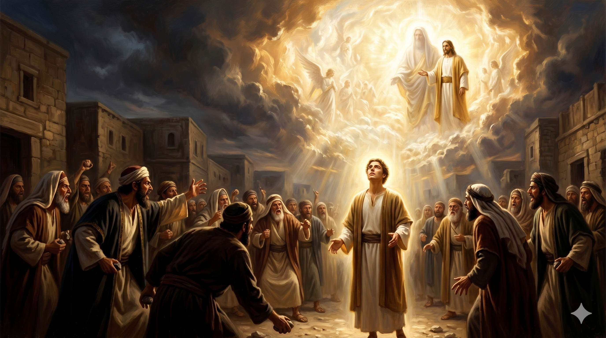
하늘이 열리다: 인자가 서 계신 것을 보노라
사도행전 7:54-56
공회원들의 분노가 폭발하는 순간, 스데반은 하늘이 열리고 인자가 서 계신 것을 봅니다. 순교자의 눈이 보는 것.
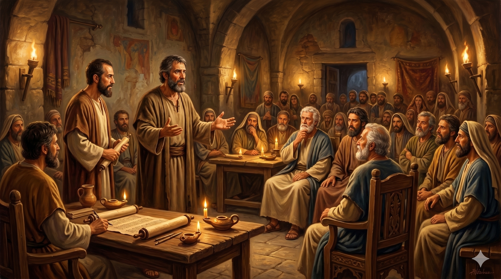
예루살렘 공의회: 이방인 성도를 위해 싸우다
사도행전 15:1-21
이방인 성도들을 위해 예루살렘 공의회에서 싸운 바나바. 조용하지만 흔들리지 않는 그의 복음 원칙.
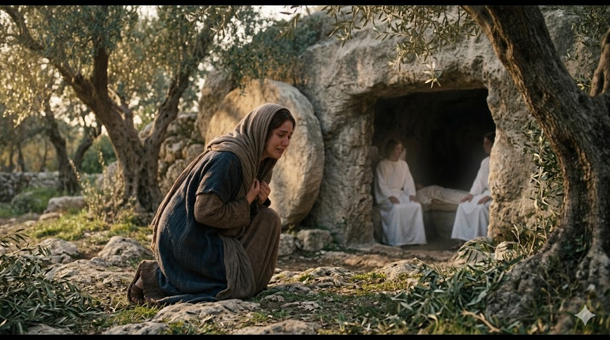
무덤 밖에서 울다: 천사들도 그녀를 보다
요한복음 20:11-13
빈 무덤 앞에서 홀로 울고 있는 마리아. 천사들도 그녀를 보았습니다. 하나님은 우는 자를 혼자 두지 않으십니다.
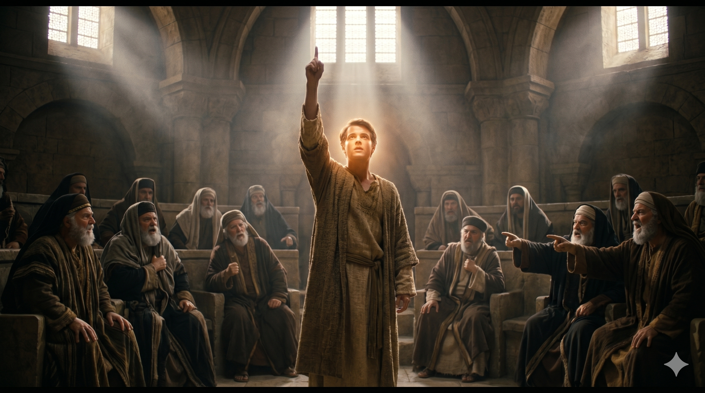
성전보다 크신 분: 설교의 절정
사도행전 7:44-53
스데반 설교의 절정. 성전이 아니라 그리스도가 예배의 중심임을 담대하게 선포합니다.

비시디아 안디옥과 루스드라: 함께 달린 복음
사도행전 13:13-14:28
박해와 기적이 교차하는 첫 선교여행의 현장. 함께 달린 두 사람이 각자의 자리에서 복음을 전합니다.
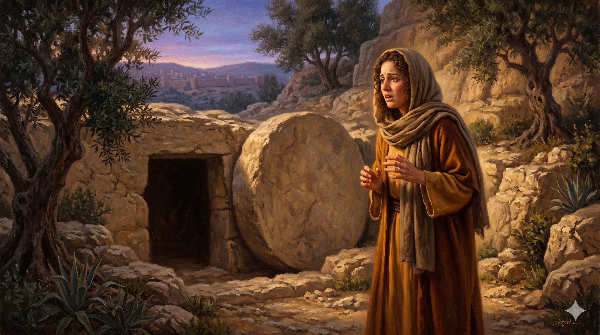
빈 무덤을 발견하다: 돌이 옮겨졌더라
요한복음 20:1-2
돌이 옮겨진 빈 무덤을 발견한 막달라 마리아. 혼란과 슬픔 속에서 시작된 부활의 아침 이야기.
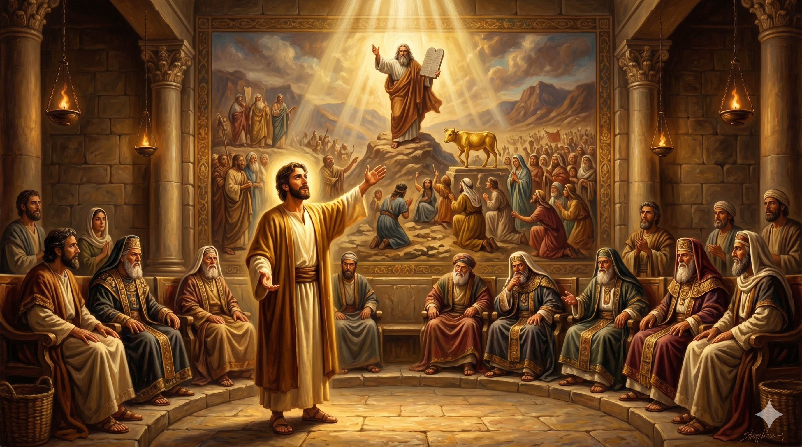
모세와 광야 세대: 역사를 꿰뚫는 설교 II
사도행전 7:17-43
역사를 꿰뚫는 설교 2부. 이스라엘이 반복한 불순종의 패턴과 하나님의 변함없는 신실함이 대조됩니다.
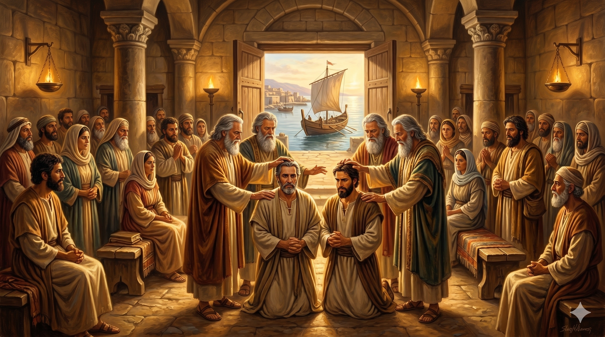
첫 선교여행 출발: 바나바에서 바울로
사도행전 13:1-12
바나바와 바울로 시작한 첫 선교여행. 그러나 여행이 진행되며 이름의 순서가 바뀝니다. 바나바의 겸손이 빛나는 순간.
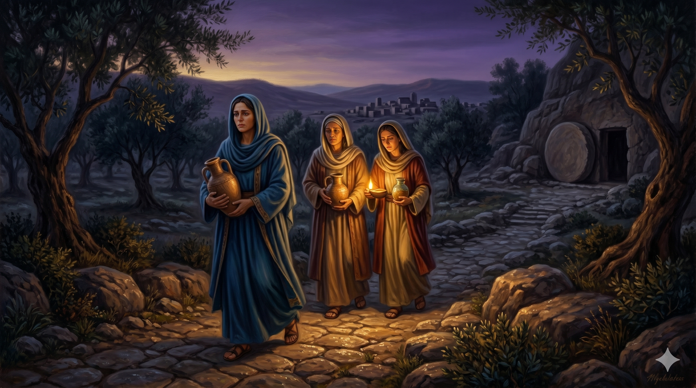
향품을 들고 이른 새벽에: 첫 번째 방문자
마가복음 16:1-4
안식일이 지나자마자 향품을 사서 새벽에 달려간 여인들. 그 사랑의 발걸음이 부활의 아침으로 이어집니다.
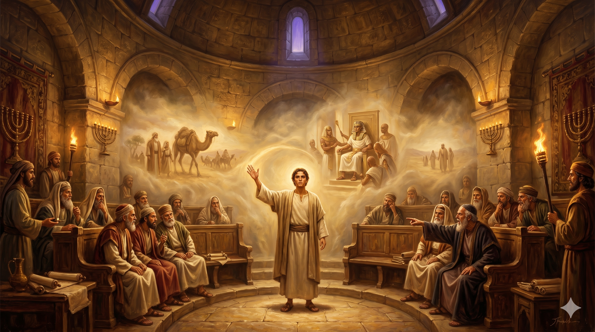
아브라함부터 요셉까지: 역사를 꿰뚫는 설교 I
사도행전 7:1-16
역사를 꿰뚫는 스데반의 설교 1부. 이스라엘의 역사를 통해 하나님의 큰 그림을 그려나갑니다.
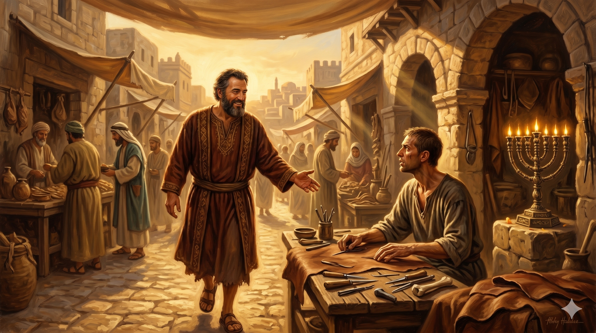
사울을 데리러 다소로 가다: 사람을 알아보는 눈
사도행전 11:25-26
잊혀진 사울을 찾아 다소까지 간 바나바. 사람을 알아보는 눈과 그 사람을 발굴하는 용기.
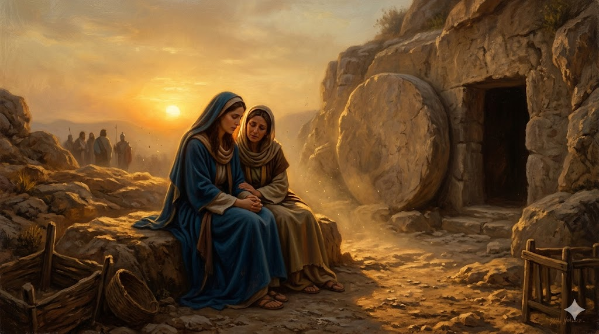
무덤 앞을 지키다: 사랑은 떠나지 않는다
마태복음 27:57-61
예수님이 장사된 무덤 앞을 지킨 두 마리아. 사랑은 끝난 것처럼 보여도 자리를 떠나지 않습니다.
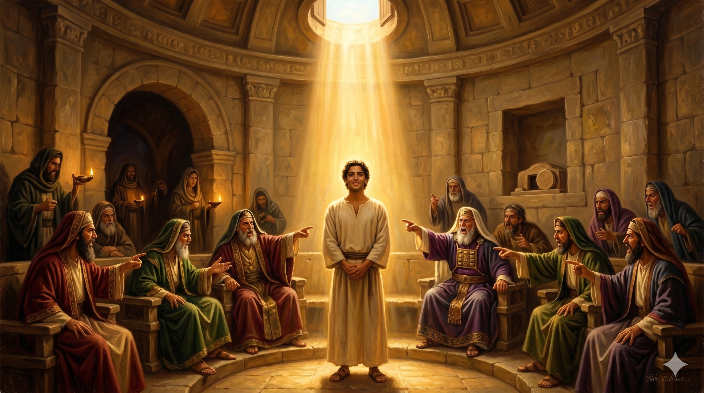
거짓 고소를 당하다: 천사의 얼굴처럼
사도행전 6:11-15
천사의 얼굴처럼 빛나던 스데반의 얼굴. 억울한 고소 앞에서 그가 보여 준 평안의 근원은 무엇인가.
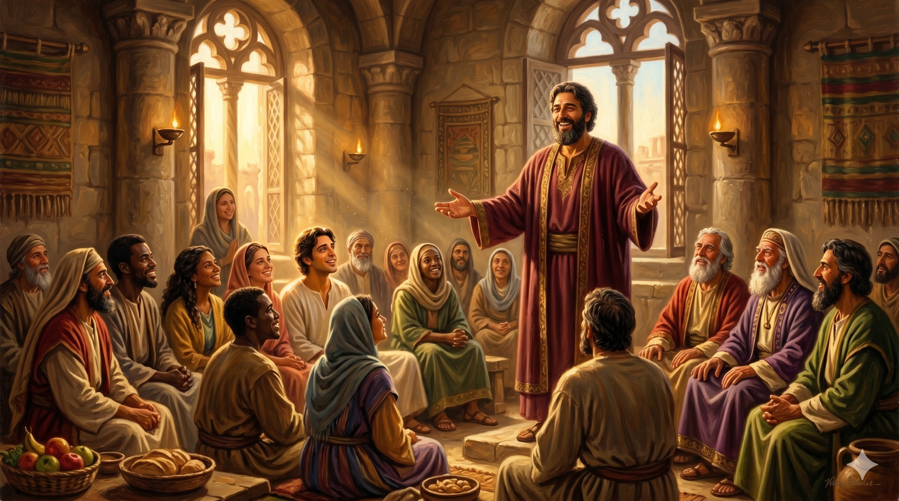
안디옥으로 파송받다: 은혜를 보고 기뻐하다
사도행전 11:19-24
안디옥 교회에 파송된 바나바. 그는 도착하자마자 은혜를 보고 기뻐했습니다. 기뻐하는 눈이 본 것들.
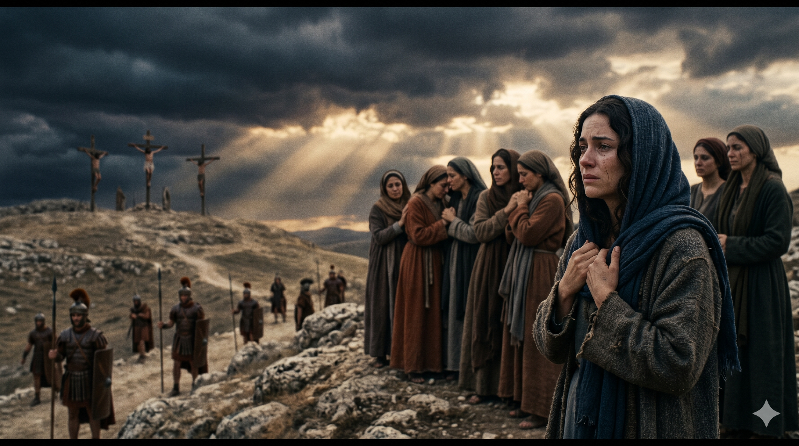
십자가 곁을 끝까지 지키다: 멀리서 바라보며
마가복음 15:40-41
제자들이 흩어진 골고다에서, 막달라 마리아는 끝까지 자리를 지켰습니다. 사랑은 위험 앞에서도 떠나지 않습니다.
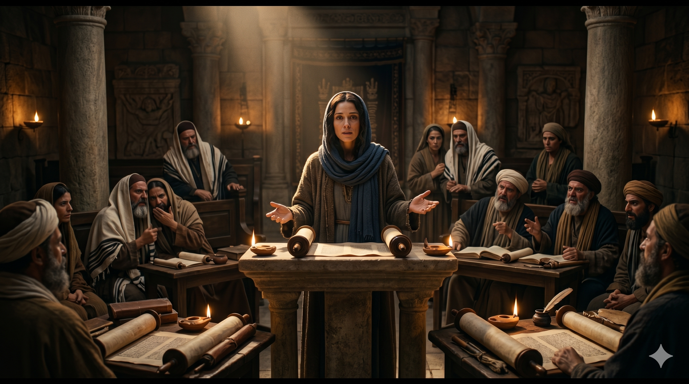
회당에서의 논쟁: 그 지혜를 당할 수 없더라
사도행전 6:7-10
스데반의 지혜와 성령을 당할 자가 없었습니다. 논쟁의 장이 어떻게 복음 선포의 자리가 되었는지를 봅니다.

사울의 손을 잡다: 두려움을 넘어선 신뢰
사도행전 9:26-27
모두가 두려워 피했던 회심한 사울을 바나바가 끌어안습니다. 두려움을 넘어선 신뢰가 바울 선교의 문을 열었습니다.

일곱 귀신에서 해방된 여인: 은혜의 시작
누가복음 8:1-3
일곱 귀신이 나간 여인으로 소개되는 막달라 마리아. 그녀의 극심한 속박과 예수님의 만남, 그리고 은혜의 시작을 묵상합니다.
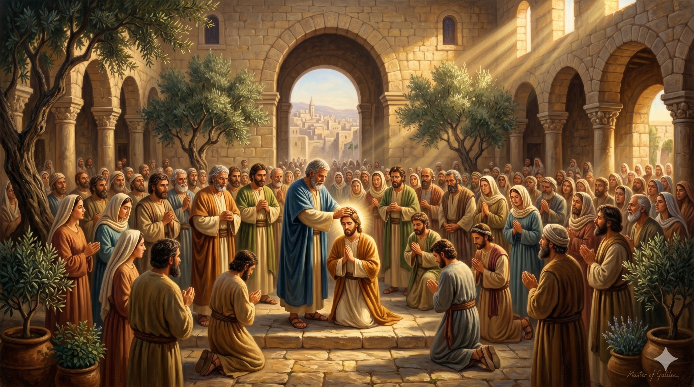
일곱 집사로 택함받다: 성령과 지혜가 충만한 사람
사도행전 6:1-6
성령과 지혜가 충만하여 칭찬 받는 사람으로 택함받은 스데반. 구제라는 작은 섬김에서 시작한 위대한 신앙인의 이야기.
밭을 팔아 드린 사람: 위로의 아들의 첫 등장
사도행전 4:36-37
위로의 아들로 불린 바나바의 첫 등장. 밭을 팔아 사도들의 발 앞에 내려놓은 그 단순한 헌신이 모든 것의 시작이었습니다.
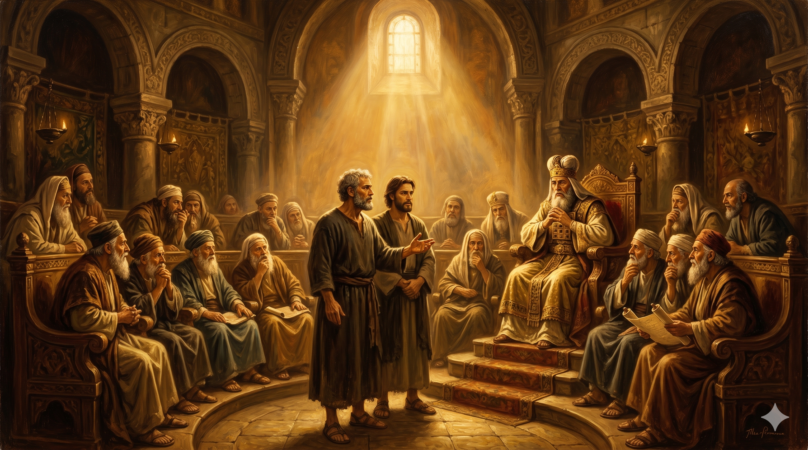
학문 없는 범인: 그러나 예수와 함께 있던 사람
사도행전 4:13
예루살렘 공회 앞에서 베드로와 요한은 학문 없는 범인이었지만 담대하게 섰습니다. 비밀은 단 하나, 전에 예수와 함께 있던 줄을 알았다는 것. 학벌이 아니라 동행이 자격이었습니다.
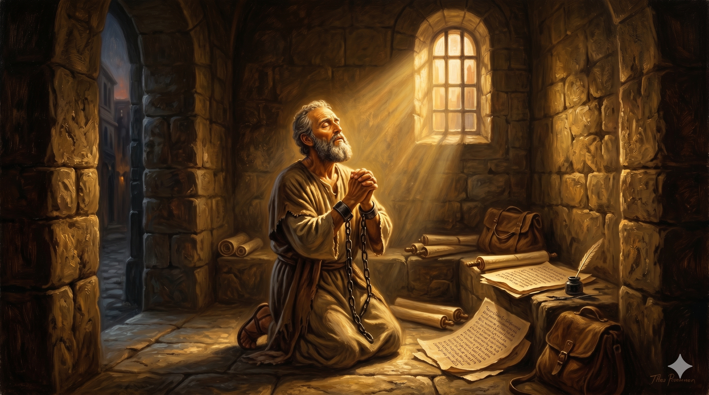
너비와 길이와 높이와 깊이를 깨달아
에베소서 3:14–21
로마 감옥에서 바울은 무릎 꿇고 에베소 성도들이 그리스도의 측량할 수 없는 사랑을 깨달기를 기도했습니다. 그의 삶 전체가 이 한 기도 안에 녹아 있습니다.
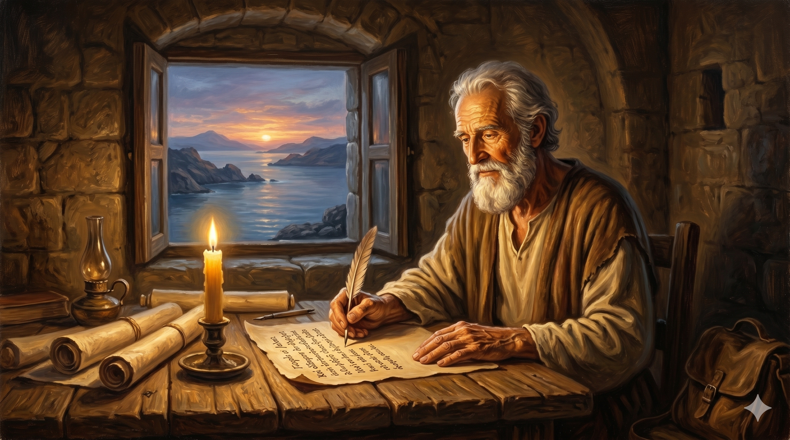
이것을 기록함은 너희로 믿게 하려 함이라
요한복음 20:31
요한복음의 마지막 선언입니다. 기록의 목적은 단 하나 "너희로 믿게 하려 함이라." 자신이 본 것을 자랑하기 위해서가 아니라 '당신도 믿을 수 있다'는 초대입니다.
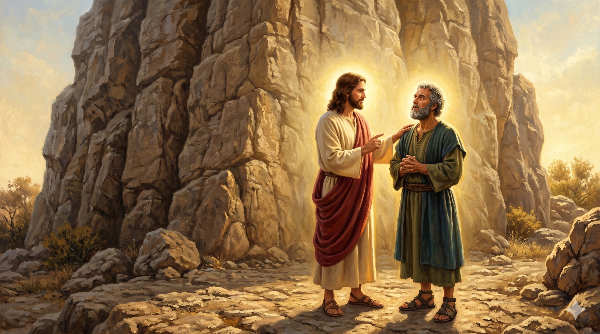
이 반석 위에 내 교회를
마태복음 16:18
가이사랴 빌립보의 절벽 앞에서 예수님은 베드로를 교회를 세울 반석이라 선언하셨습니다. 음부의 권세가 이기지 못하리라 — 하나님의 교회는 완전한 사람이 아니라 은혜로 붙잡힌 사람들 위에 세워집니다.
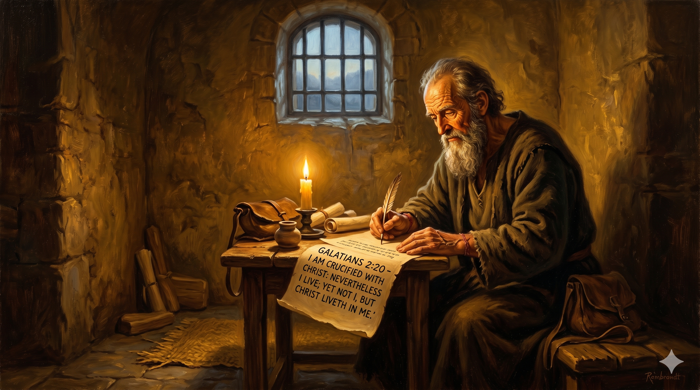
내가 그리스도와 함께 십자가에 못 박혔나니
갈라디아서 2:20
갈라디아서 2:20은 바울 신학 전체를 한 절에 압축합니다. 옛 자아는 십자가에서 죽었지만 바울은 살아 있습니다 — 자기를 버리신 하나님의 아들의 사랑 안에서.
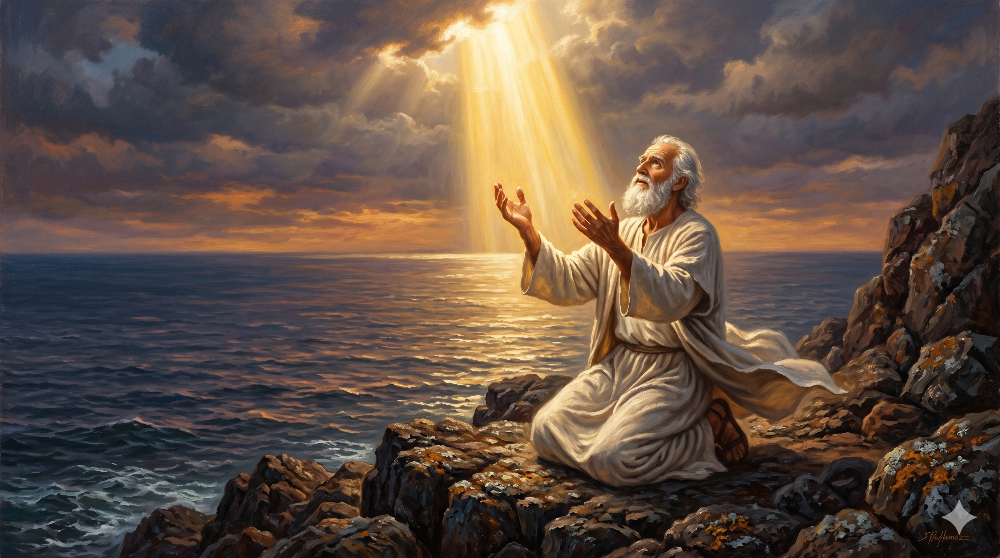
주 예수여 오시옵소서 — 마지막 기도
요한계시록 22:16–21
요한계시록 22장은 성경의 마지막 장입니다. 밧모 섬의 노년의 요한이 성경의 마지막 기도를 드립니다. "아멘 주 예수여 오시옵소서."
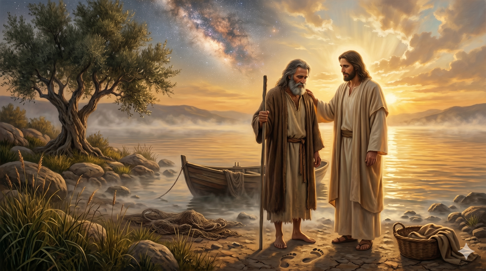
네 손을 펴매 — 순교의 예언
요한복음 21:18–19
부활하신 예수님이 갈릴리 호숫가에서 베드로의 순교를 예언하셨습니다. "네 손을 펴리니" — 십자가 처형의 예고. 그러나 마지막 말씀은 "나를 따르라." 두려움이 아닌 사랑으로 죽음을 맞이했습니다.
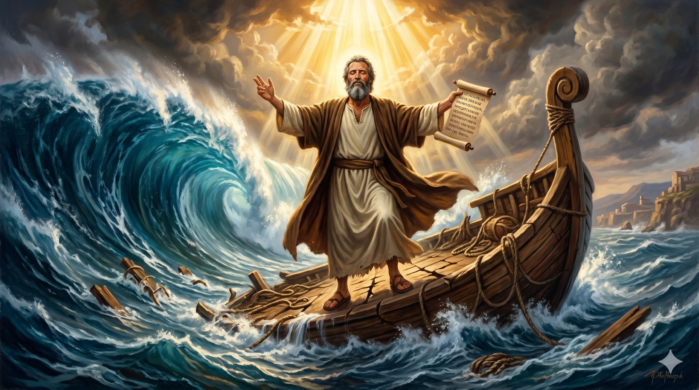
누가 우리를 그리스도의 사랑에서 끊으리요
로마서 8:31–39
로마서 8장은 바울이 평생 경험하고 깨달은 신앙의 정수입니다. 사망이나 생명이나, 그 어떤 피조물도 그리스도 예수 안에 있는 하나님의 사랑에서 우리를 끊을 수 없습니다.
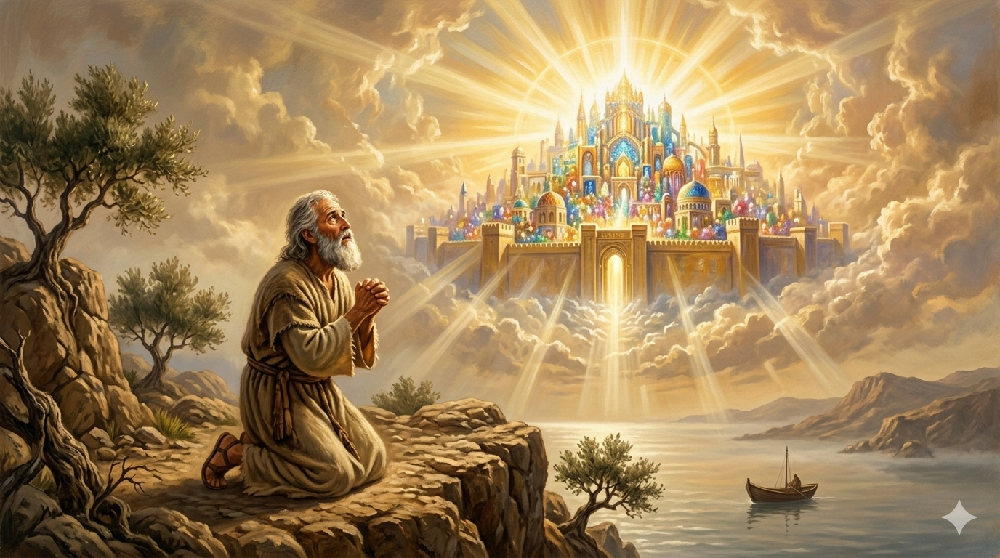
새 하늘과 새 땅 — 마지막 환상
요한계시록 21:1–7
요한계시록 21장은 성경 전체의 종착점입니다. 새 하늘과 새 땅의 중심에는 모든 눈물을 닦아 주시는 하나님의 손이 있습니다. 지금 흘리는 눈물은 영원하지 않습니다.

양 떼의 본 — 늙은 사도의 목회 권면
베드로전서 5:1–4
베드로가 장로들에게 사도가 아닌 함께 장로 된 자로서 권면합니다. 억지가 아닌 자원함으로, 이득이 아닌 기꺼이, 주장이 아닌 양 무리의 본이 되라. 목자장이 나타나실 때 시들지 않는 영광의 관이 기다립니다.
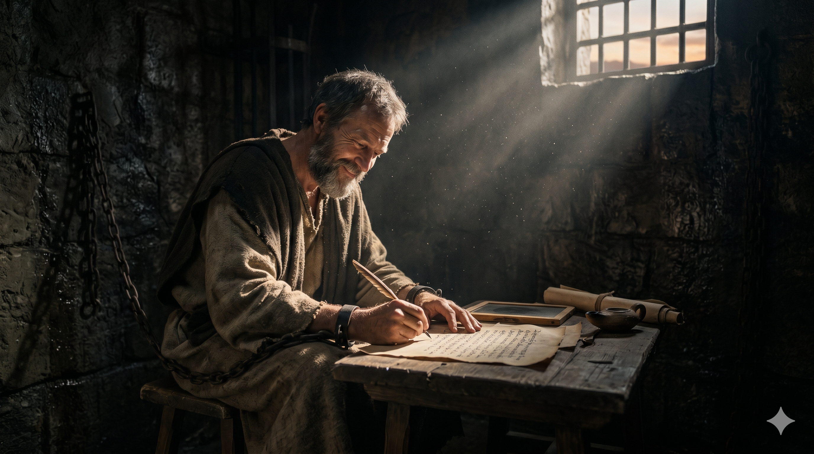
능력 주시는 자 안에서 — 비천과 풍부의 일체
빌립보서 4:10–13
로마 감옥에서 바울이 고백합니다. "어떠한 형편에 있든지 자족하기를 배웠노라." 스토아적 자기 단련이 아니라 고난을 통해 배운 비결입니다. "내게 능력 주시는 자 안에서 내가 모든 것을 할 수 있느니라."
밧모 섬 — 등 뒤에서 들리는 큰 음성
요한계시록 1:9–18
밧모 섬에 유배된 노사도 요한의 등 뒤에서 큰 음성이 울립니다. 영광의 그리스도 앞에 죽은 자같이 엎드러지지만 오른손이 내밀어집니다 — "두려워하지 말라. 나는 처음이요 마지막이니 사망과 음부의 열쇠를 가진 살아 있는 자라."
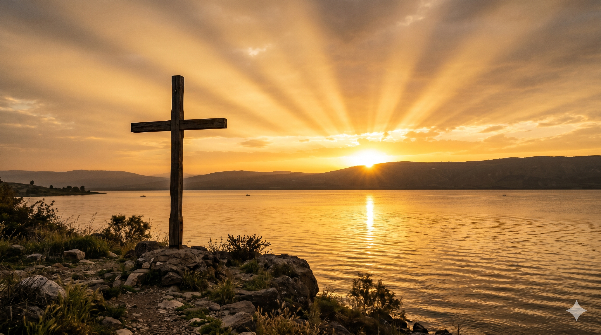
그가 친히 나무에 달려 — 양의 길을 따라
베드로전서 2:21–25
베드로는 그리스도의 고난이 우리가 따라야 할 본임을 선언합니다. 친히 나무에 달려 우리 죄를 담당하셨으니, 우리로 죄에 대하여 죽고 의에 대하여 살게 하려 하심입니다. 그의 채찍에 맞음으로 나음을 얻은 우리는 길 잃은 양이었으나 영혼의 목자께 돌아왔습니다.
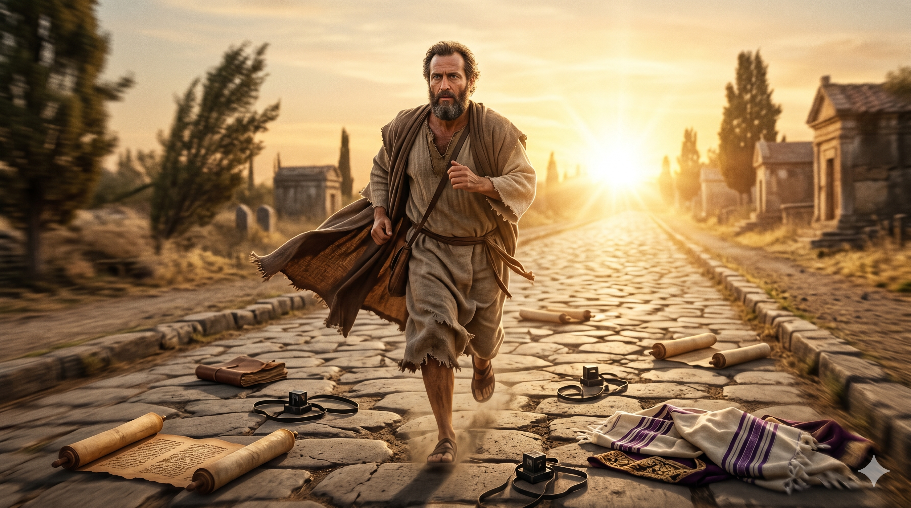
푯대를 향하여 — 모든 것을 배설물로
빌립보서 3:4–14
바울은 그리스도를 아는 것 앞에서 모든 것을 배설물로 여깁니다. 할례, 지파, 바리새인의 지위 — 모든 가치가 역전됩니다. "오직 내가 그리스도 예수께 잡힌 바 된 그것을 잡으려고 달려가노라." 노년의 사도는 여전히 푯대를 향해 달려가고 있었습니다.
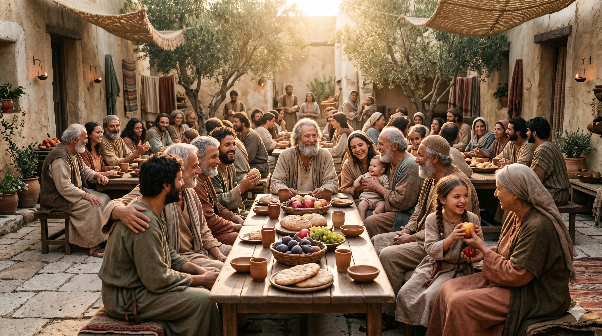
사랑하는 자들아 우리가 서로 사랑하자
요한일서 4:7–12
"하나님은 사랑이심이라" — 기독교 신학의 가장 깊은 선언입니다. 하나님을 본 사람은 없지만 우리가 서로 사랑하면 하나님이 우리 안에 거하십니다. 사랑이 하나님 임재의 증거입니다. 오늘 당신의 사랑의 행위 하나가 하나님을 세상에 드러냅니다.
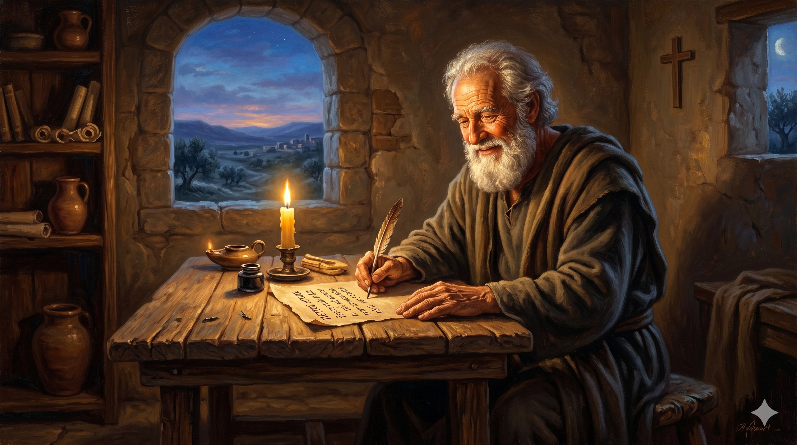
산 소망 — 너희가 보지 못하나 사랑하는 그분
베드로전서 1:3–9
베드로전서는 탄식이 아닌 찬송으로 시작합니다 — 그리스도의 부활로 태어난 "산 소망" 때문입니다. "보지 못하였으나 사랑하는도다" — 이것이 베드로가 찬탄한 믿음, 핍박 속에서도 빛나는 눈을 넘어서는 신앙입니다.
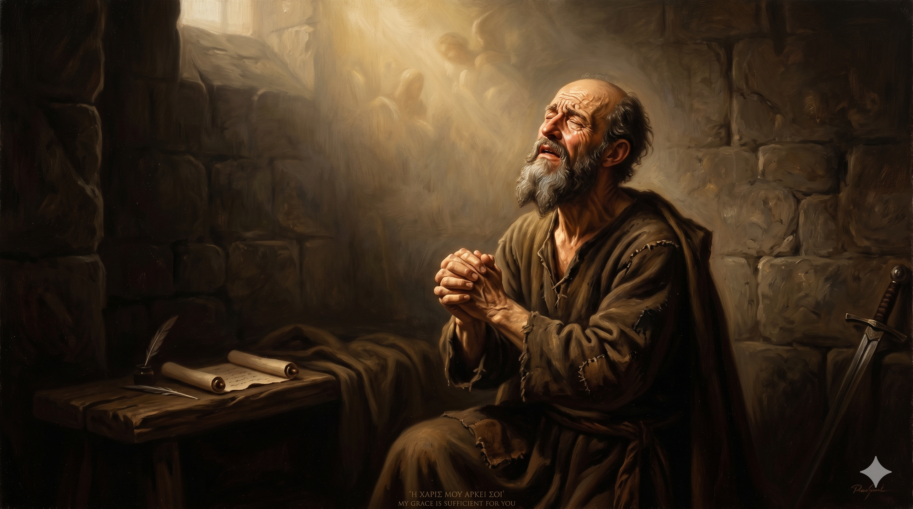
셋째 하늘과 육체의 가시 — 약함이 강함이 되다
고린도후서 12:1–10
바울은 셋째 하늘에 이끌려 간 체험을 고백하면서도 육체의 가시를 이야기합니다. 세 번 제거해 달라 간청했지만 응답은 "내 은혜가 네게 족하도다 이는 내 능력이 약한 데서 온전하여짐이라"였습니다.
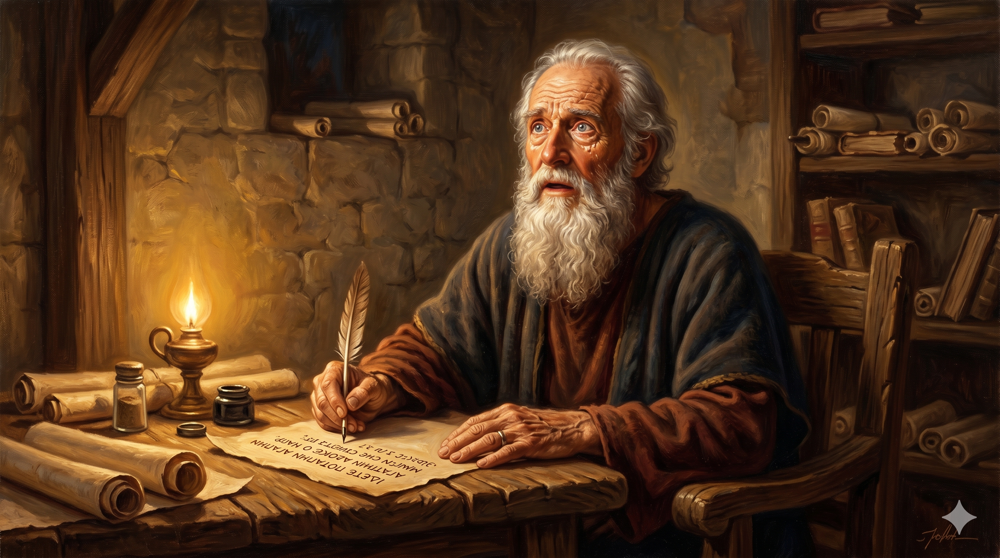
어떠한 사랑을 우리에게 베푸사 — 하나님의 자녀
요한일서 3:1–3
"보라 아버지께서 어떠한 사랑을 우리에게 베푸사 하나님의 자녀라 일컬음을 받게 하셨는가!" 그리스어 '포타펜'은 전혀 다른 차원의 사랑을 묘사합니다. 세상이 알아보지 못해도 우리는 이미 그분의 자녀입니다.

안디옥에서 책망받다 — 정직하게 굽힌 사람
갈라디아서 2:11–21
안디옥 교회는 유대인과 이방인이 함께 식탁에 앉는 놀라운 공동체였습니다. 그러나 야고보에게서 온 사람들이 도착하자 베드로는 눈치를 보며 물러났습니다. 바울은 그를 공개적으로 책망했습니다 — 이것은 식사가 아니라 복음의 진리의 문제였기 때문입니다.
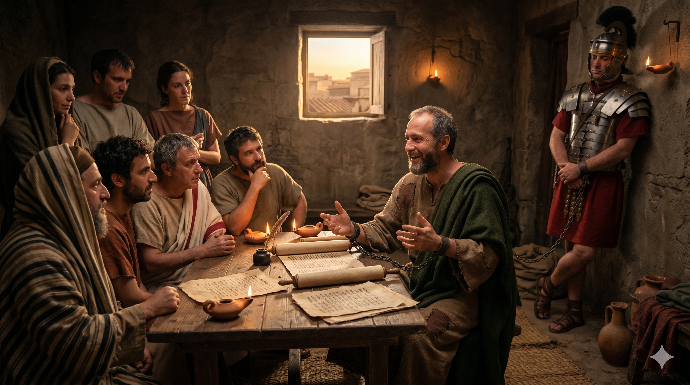
로마의 셋집 — 갇혔으나 매이지 아니한 복음
사도행전 28:11–31
바울은 군인에게 쇠사슬로 묶인 죄수 신분으로 로마에 도착했습니다. 그러나 온 이태를 셋집에 머물며 찾아오는 모든 사람을 영접하고 "거침없이" 복음을 전했습니다. 감옥이 강단이 되고 쇠사슬이 펜이 되었습니다.
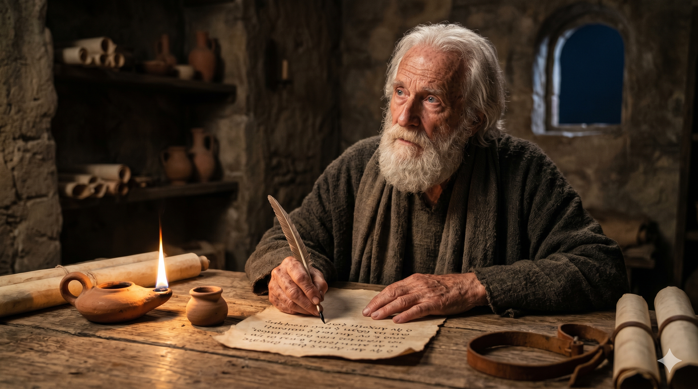
우리가 들은 바요 본 바요 만진 바라
요한일서 1:1–4
요한일서는 숨 막히는 선언으로 시작됩니다. "우리가 들은 바요 눈으로 본 바요 손으로 만진 바라." 초대 교회의 마지막 살아있는 목격자 노년의 요한이 독자들을 아버지와 그의 아들 예수 그리스도와의 사귐 속으로 초청합니다.
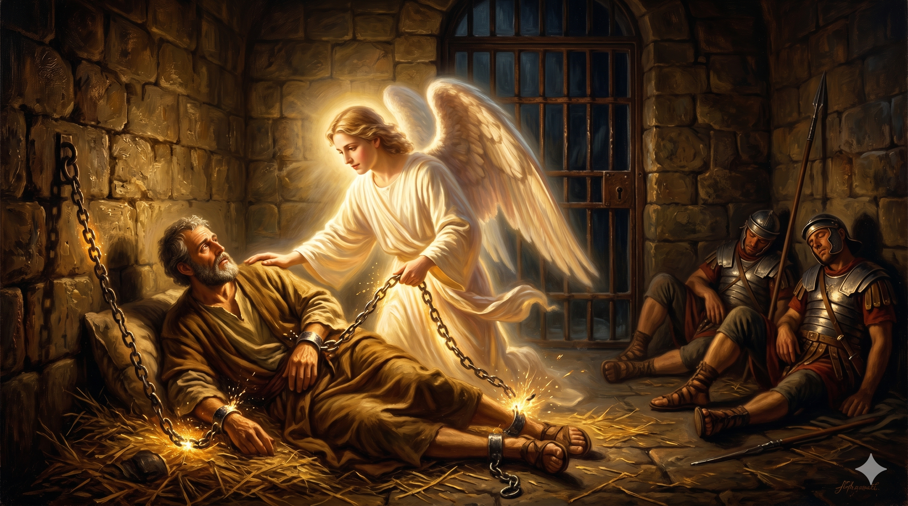
옥에서 풀려나다 — 천사가 곁구리를 치다
사도행전 12:1–19
헤롯이 베드로를 잡아 옥에 가두고 두 쇠사슬로 묶었지만, 교회는 간절히 기도했고 그날 밤 천사가 나타나 곁구리를 쳐 쇠사슬을 풀었습니다. 하나님의 역사는 어떤 쇠사슬보다 강하고, 교회의 기도는 하늘을 움직입니다.
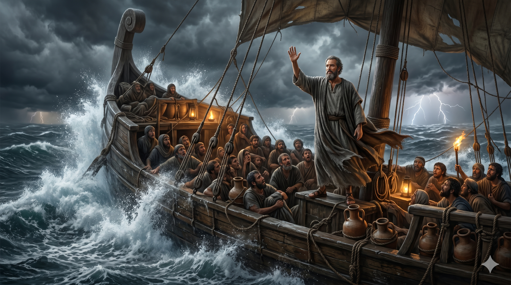
유라굴로 폭풍 — 한 사람을 위하여 모두 살다
사도행전 27:13–44
유라굴로라는 광폭한 북동풍이 배를 덮쳤고 모두가 살 가망을 버렸습니다. 그러나 죄수 신분의 바울이 276명 앞에서 하나님의 약속을 선포했습니다. 한 사람의 믿음이 276명의 생명을 살렸습니다 — 폭풍은 하나님의 목적을 멈추지 못합니다.
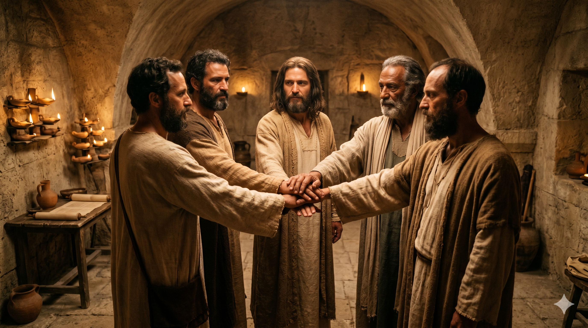
기둥 같이 여기는 — 사도의 무게를 이고 가는 사람
갈라디아서 2:9
요한은 야고보, 베드로와 함께 교회의 '기둥'으로 불렸습니다. 기둥은 화려한 것이 아니라 무게를 짊어지는 것입니다. 십자가에서 다락방까지, 예루살렘에서 밧모 섬까지 — 요한의 충실한 현존이 그를 기둥으로 세웠습니다.
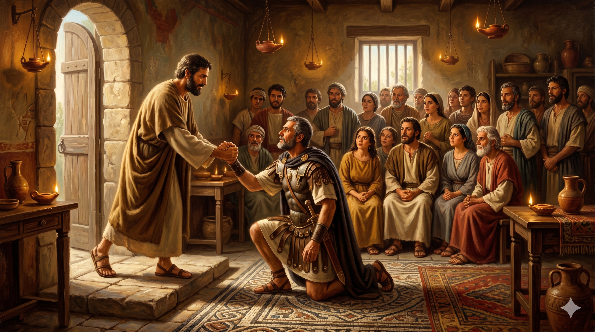
고넬료 — 하나님이 가까이 하지 못할 사람이 없다
사도행전 10:1–48
고넬료는 로마 백부장이자 이방인이었지만 하나님을 경외하는 사람이었습니다. 환상을 통해 하나님은 베드로의 평생의 편견을 무너뜨리셨고, 성령이 이방인들에게 임하여 초대 교회가 이방인 선교의 문을 열게 됩니다.
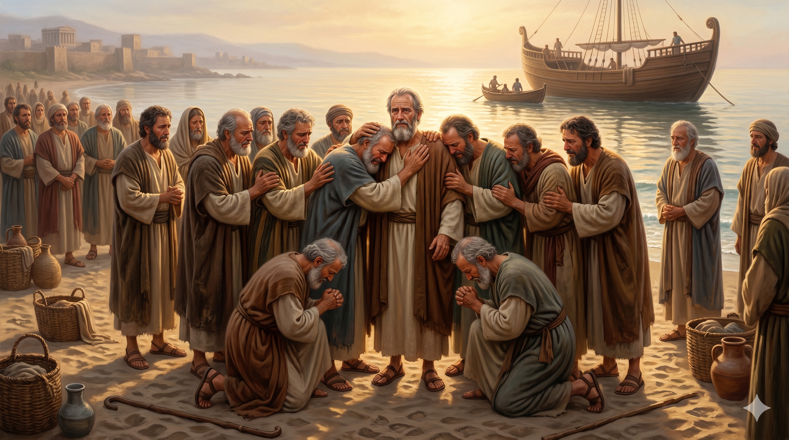
에베소 장로들과의 눈물의 작별
사도행전 20:17–38
밀레도에서 바울이 에베소 장로들을 불러 마지막 작별을 합니다. "나의 생명조차 조금도 귀한 것으로 여기지 않는다." 무릎 꿇고 기도한 후 모두가 크게 울며 목을 안았습니다 — 다시는 그 얼굴을 보지 못하리라는 것을 알기에.
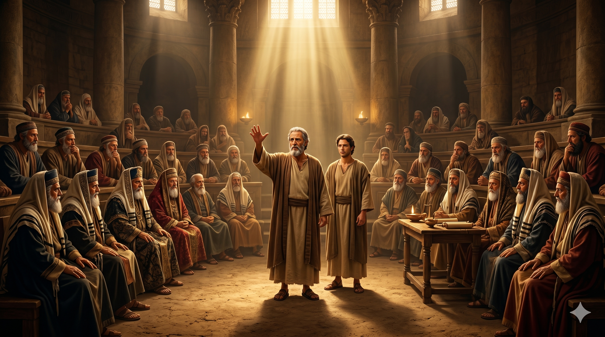
학문 없는 범인 — 그러나 예수와 함께 있던 사람
사도행전 4:13
산헤드린 공회 앞에서 베드로와 요한은 학자들이 당할 수 없는 담대함으로 말했습니다. 그 비밀은? "예수와 함께 있던 줄 알고." 요한은 학문이 없었지만 주님과의 동행이 그를 복음서 기자로, 교회의 기둥으로 세웠습니다.
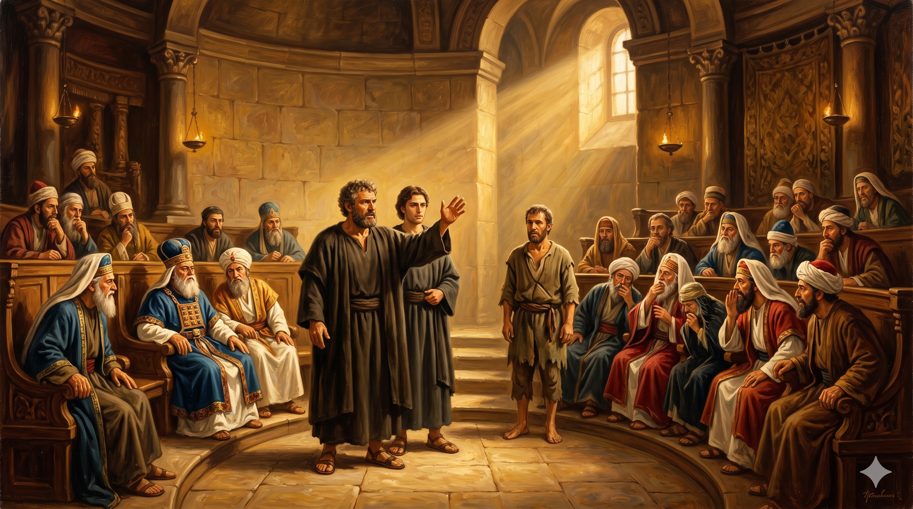
우리가 보고 들은 것을 말하지 아니할 수 없다
사도행전 4:1–22
산헤드린 공회 앞에서 베드로가 담대하게 선언합니다. "우리는 보고 들은 것을 말하지 아니할 수 없다." 한때 세 번 부인했던 그가 같은 권력 앞에 다시 서서, 성령 충만하여 예수의 이름을 타협 없이 선포합니다.
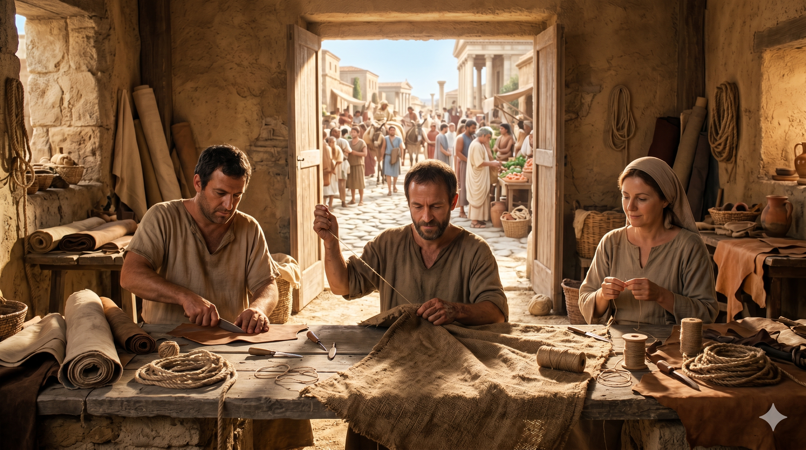
고린도 — 두려워 말고 잠잠하지 말라
사도행전 18:1–11
고린도에서 거센 반대에 직면한 바울에게 주님이 밤 환상으로 나타나셨습니다. "두려워하지 말며 잠잠하지 말고 말하라. 내가 너와 함께 있으매 이 성중에 내 백성이 많음이라." 바울은 그 약속을 붙잡고 1년 6개월을 머물렀습니다.

미문에서 베드로와 함께 — 조용한 동역자
사도행전 3:1–10
미문 치유 기적에서 요한은 베드로 곁에 묵묵히 서 있었습니다. 성경은 요한의 말을 기록하지 않지만, 그는 거기 있었습니다. 혼자 빛나려 하지 않고 함께 하나님의 일을 이루어가는 동역의 아름다움입니다.

미문의 앉은뱅이 — 은과 금은 없으나
사도행전 3:1–10
미문 앞에서 베드로가 선언합니다. "은과 금은 내게 없거니와 내게 있는 이것을 네게 주노니." 예수의 이름으로 사십 년을 앉아 있던 사람이 뛰어 일어나 걸으며 성전에 들어가 하나님을 찬송합니다. 그가 원한 것은 생존이었지만, 받은 것은 예배였습니다.
아덴 아레오바고 — 지성 앞에 선 복음
사도행전 17:16–34
아테네에서 바울은 '알지 못하는 신에게' 새긴 제단을 발견하고 아레오바고 철학자들 앞에서 참 하나님을 선포합니다. 그들의 시인의 말로 구도와 부활을 연결합니다. 복음은 지성을 두려워하지 않습니다. 지성을 만나고, 그것을 넘어섭니다.

주시라! — 가장 먼저 알아본 사랑의 눈
요한복음 21:1–14
디베랴 바다에서 빈 그물의 밤이 지나고, 그물이 찼을 때 요한의 눈이 가장 먼저 열렸습니다 — "주시라!" 사랑은 다른 이가 놓치는 것을 봅니다. 해변에 주님은 이미 조반을 준비해 두셨습니다. 가장 빈 순간에, 그분은 이미 거기 계십니다.
오순절 첫 설교
사도행전 2:14–41
오순절 후 베드로가 수천 명 앞에서 선포합니다. "너희가 못 박은 예수를 하나님이 주와 그리스도가 되게 하셨다." 삼천 명이 세례를 받았습니다. 겁쟁이 어부가 복음의 첫 목소리가 된 것은 성령의 능력이었습니다.

빌립보 옥중 찬송
사도행전 16:16–40
매를 맞고 차꼬에 묶인 채 한밤중에 찬송한 바울과 실라. 지진으로 문이 열렸지만 한 영혼을 위해 머물렀습니다. 간수와 온 집이 세례를 받습니다. 차꼬의 상처가 복음의 씨앗이 되었습니다.
빈 무덤을 향해 달려간 두 사람
요한복음 20:1–10
요한이 먼저 도착했으나 기다렸고, 베드로가 먼저 들어갔습니다. 그리고 요한이 들어가 보고 — 믿었습니다. 다 이해하지 못했음에도. 신앙은 완벽한 이해가 아니라 보여진 것 앞에 무릎 꿇는 것입니다.
맛디아 선택
사도행전 1:15–26
예수님 승천 후, 베드로가 다락방에서 유다의 배반을 말씀으로 해석하고 기도와 제비 뽑기로 맛디아를 선택했습니다. 넘어졌던 사람이 일어나 공동체를 세웁니다.

마게도냐 환상
사도행전 16:6–15
문이 닫히자 밤 환상을 받습니다 — "마게도냐로 건너와 도우라." 주께서 루디아의 마음을 여시고 그녀의 집이 유럽 최초의 교회가 됩니다.
십자가 곁의 한 제자
요한복음 19:25–27
다른 제자들이 도망친 자리에서 요한 홀로 남았습니다. 주님은 어머니를 맡기시며 사랑으로 새로운 가족 공동체를 세우셨습니다.
네가 나를 사랑하느냐
요한복음 21:15–19
디베랴 호숫가 조반 후, 예수님이 베드로에게 세 번 "네가 나를 사랑하느냐" 물으셨습니다. 세 번의 부인이 세 번의 사랑 고백으로, 세 번의 수치가 세 번의 사명 위임으로 덮이는 순간이었습니다. 회복은 감정의 위로가 아니라 사명의 회복이었습니다.
루스드라
사도행전 14:8–20
신으로 떠받들던 군중이 바울을 돌로 치고 죽은 줄로 알고 성 밖에 버렸습니다. 그러나 바울은 일어나 성에 다시 들어갔고, 이튿날 더베로 떠났습니다. 쓰러진 자리에서 일어나는 것, 그것이 복음의 능력입니다.
예수의 품에 의지하여 누운 자
요한복음 13:21–30
마지막 만찬에서 요한은 '예수의 품에 의지하여 누운 자'로 묘사됩니다. 조용히 배반자가 누구인지 묻고 그 비밀을 예수님과 단둘이 나눈 요한. 사랑받는 제자의 특권은 지위가 아니라 주님 곁에 머무는 친밀함이었습니다.
닭 울기 전
마태복음 26:69–75
예수께서 심문을 받으시던 밤, 베드로는 세 번 주님을 부인했습니다 — 닭이 울자 밖에 나가 심히 통곡합니다. 이 통곡은 단순한 후회가 아니라 자기 민낯을 마주한 울부짖음이었습니다. 그러나 주님은 베드로를 포기하지 않으셨습니다. 쓰러진 자리가 곧 일으켜지는 자리입니다.
바예수와의 대결
사도행전 13:1–12
안디옥 교회가 금식과 기도 중에 파송한 바울이, 총독의 믿음을 방해하는 마술사 엘루마와 맞서 성령 충만하여 심판을 선포합니다 — 총독은 이를 보고 믿었습니다. 선교의 첫 대결이 복음의 권능을 드러냈습니다.
변화산의 한 사람
마태복음 17:1–13
가이사랴 빌립보 고백 엿새 후, 예수께서 베드로·야고보·요한을 데리고 높은 산에 올라 변형되셨습니다. 요한은 이 순간을 평생 간직했습니다 — "우리가 그의 영광을 보니." 산 위의 영광이 수십 년 박해를 견디는 내면의 빛이 되었습니다.
죽기까지 함께
마태복음 26:31–35
유월절 만찬이 끝난 밤, 베드로는 "다 버릴지라도 나는 결코 버리지 않겠나이다" 선언합니다. 그러나 주님은 "닭 울기 전에 세 번 부인하리라" 예고하십니다. 믿음의 진정성과 극한 상황에서의 자신감은 서로 다른 이야기입니다. 자기 과신이 무너지는 자리가, 주님께 온전히 기대는 출발점이 됩니다.
안디옥 — 비로소 그리스도인이라 일컬음을 받다
사도행전 11:25–26
바나바가 다소까지 가서 사울을 찾아 안디옥으로 데려와 일 년간 함께 가르쳤고, 그 가르침의 열매가 역사상 가장 중요한 이름 — "그리스도인"을 탄생시켰습니다. 스스로 주장한 것이 아니라, 삶이 그리스도를 닮아 세상이 알아보게 된 이름이었습니다.

좌우편에 앉기를 구하다
마가복음 10:35–45
야고보와 요한이 주의 영광 중에 좌우편에 앉기를 구합니다. 그러나 예수께서는 위대함을 재정의하십니다 — "크고자 하는 자는 섬기는 자가 되어야 하리라." 크고자 하는 열망 자체는 나쁘지 않습니다 — 그 방향을 섬김 쪽으로 바꾸라 하셨습니다.
내 발을 영원히 씻기지 못하시리이다
요한복음 13:1–11
다락방 만찬의 밤, 한 분이 무릎 꿇고 제자들의 발을 씻기십니다. 베드로는 발을 거두며 "내 발을 영원히 씻지 못하시리이다" 합니다. 그러나 주님의 대답은 단호합니다 — "내가 너를 씻어 주지 아니하면 네가 나와 상관이 없느니라." 섬김을 거부하는 것이 겸손이 아니라, 주님과의 연결을 거부하는 것이었습니다.

아라비아의 삼 년 — 광야의 침묵
갈라디아서 1:11–24
다메섹 도상의 만남과 광주리 탈출 이후, 사울의 발길은 예루살렘이 아닌 아라비아를 향합니다. 삼 년이라는 시간이 한 문장 속에 접혀 있습니다. 그 광야의 침묵이 이방인 세계를 뒤흔들 복음의 신학이 익어가던 밭이었습니다.

우리를 따르지 않는 자를 금하였나이다 — 좁은 마음
마가복음 9:38–40
우리 무리에 속하지 않은 어떤 자가 주의 이름으로 귀신을 내쫓자 청년 요한이 금합니다. 그러나 주님은 명확히 말씀하십니다 — "금하지 말라." 복음은 어느 한 그룹의 독점물이 될 수 없습니다. 좁았던 그 청년이 훗날 "하나님은 사랑이시라" 쓰는 사람이 됩니다.
변화산의 영광 — 초막 셋을 짓고자 한 사람
마태복음 17:1–9
가이사랴 빌립보의 고백 엿새 후, 베드로는 주님과 함께 높은 산에 오릅니다. 해같이 빛나신 한 분, 모세와 엘리야의 출현 — "초막 셋을 짓겠나이다" 외친 베드로에게 하늘의 음성이 바로잡으십니다. "이는 내 사랑하는 아들이니 너희는 그의 말을 들으라." 영광은 머물러 모실 대상이 아니라, 산 아래로 내려가야 할 빛이었습니다.

회당에서 곧 전파하다 — 회심의 첫 증거
사도행전 9:20–30
아나니아의 안수로 다시 보게 된 사울은 "즉시로" 회당에 들어가 예수가 하나님의 아들이심을 전파합니다. 어제까지 결박할 명단을 들고 들어오던 그 회당에, 오늘은 결박하려던 그 이름을 메고 들어선 것입니다. 회심의 첫 증거는 화려한 성공이 아니라 "즉시로" 입을 여는 한 발걸음이었습니다.
사마리아에 불 내리리이까 — 불같은 청년
누가복음 9:51–56
사마리아 한 마을이 한 분을 거절하자 두 형제가 "하늘에서 불을 내릴까요" 묻습니다. 그러나 한 분은 꾸짖으시고 조용히 다음 마을로 향하십니다. 훗날 불을 청하던 그 청년이 사마리아에 안수하러 내려가는 사도가 됩니다 — 한 분의 꾸짖음은 칼이 아니라 도공의 손이었습니다.
주는 그리스도시요 살아 계신 하나님의 아들
마태복음 16:13–20
갈릴리 북쪽 끝 가이사랴 빌립보, 이방 신들의 절벽 앞에서 한 분이 한 질문을 던지십니다. 한 어부가 한 발 앞으로 나섭니다 — "주는 그리스도시요 살아 계신 하나님의 아들이시니이다." 그 한 고백 위에 사천 년의 교회가 약속됩니다.
아나니아의 손 — 두려움 너머로 내민 한 손
사도행전 9:10–19
다메섹 직가의 한 작은 집, 한 늙은 제자 아나니아가 정직한 두려움을 통과해 박해자 사울에게 안수하며 "형제"라 부릅니다. 그 한 마디 호칭이 사울의 두 눈에서 비늘을 떨어뜨리는 첫 손길이 됩니다.
보아너게 — 우레의 아들이라는 별명
마가복음 3:17
한 분은 두 형제의 거친 기질을 책망하지 않으시고 오히려 별명을 지어 주셨습니다. "보아너게" — 우레의 아들들. 하늘에서 불을 내리려 하던 그 청년이 사랑의 사도가 된 변형, 그것이 한 분이 별명을 지어 주신 까닭이었습니다.

물 위를 걷다 — 믿음과 흔들림의 한 발자국
마태복음 14:22–33
밤 사경의 갈릴리 풍랑, 한 분의 한 마디 "오라"에 한 어부가 배 밖으로 첫 발을 내딛습니다. 시선이 발 아래 파도로 옮겨진 그 순간 가라앉기 시작하지만, 그분의 손이 "즉시" 내밀어집니다.
스데반 곁의 청년 사울 — 첫 피의 그림자
사도행전 7:54–8:3
사도행전에 처음 등장하는 사울의 자리는 학자의 강단이 아니라, 스데반의 죽음에 가담하는 무리의 겉옷을 지키던 자리였습니다.
그물을 깁다가 — 아버지 세베대를 두고
마가복음 1:19–20
갈릴리 호숫가의 한 어선, 두 형제가 한 분의 한 마디에 그물을 두고 일어납니다. 한 사람의 떠남이 다른 사람의 자리를 비우지 않게 하시는 분.
깊은 곳에 그물을 내려라 — 밤이 새도록 잡지 못한 어부
누가복음 5:1–11
갈릴리 호숫가의 한 새벽, 빈 그물을 씻고 있던 한 어부에게 한 분이 다가오십니다. "깊은 곳에 그물을 내려라" — 한 마디 말씀에 베드로의 인생이 영원히 다른 방향으로 돌아섭니다.
다메섹 도상의 빛 — 정오에 만난 한 분
사도행전 9:1–9
예루살렘에서 다메섹으로 가는 길, 정오의 햇빛보다 더 밝은 한 빛이 한 청년을 땅에 엎드러뜨립니다. "사울아 사울아 네가 어찌하여 나를 박해하느냐."
와 보라 — 무명의 두 제자 중 한 사람
요한복음 1:35–39
요단강 가에서 세례 요한이 "보라 하나님의 어린 양"이라 외치던 그 오후, 한 분의 뒤를 따라간 두 제자 — 한 사도의 가장 조용한 첫 한 발자국.
하늘의 맹세, 영혼의 닻 — 변할 수 없는 두 가지 위에 약속이 서다
히브리서 6:13–20 · 창세기 22:16–18
하나님은 약속 위에 맹세를 더하셨습니다 — 자신을 위해서가 아니라, 흔들리는 우리에게 한 번 더 보증하시려고. 이 소망은 영혼의 닻 같아서 안전하고 견고하여 휘장 안에 들어갑니다.
약속을 따라 난 자 — 우리는 이삭처럼 약속의 자녀라
갈라디아서 4:21–31 · 로마서 9:7–9
바울은 우리가 이삭처럼 약속의 자녀라 선언합니다 — 인간의 노력이 아닌 하나님의 약속으로 태어난 사람들. 여종의 자녀가 아니요 자유 있는 여자의 자녀입니다.

지팡이 머리에 의지하여 경배하다 — 평생의 절뚝거림이 마지막 예배가 되다
히브리서 11:21 · 창세기 47:31
히브리서는 야곱의 일생을 한 장면으로 요약합니다 — 지팡이 머리에 의지하여 경배. 평생의 약함의 표시가 마지막 경배의 자세가 됩니다.
약속의 자손 그리스도 — 한 사람을 통해 만민이 복을 받다
갈라디아서 3:6–16 · 창세기 12:3
바울은 아브라함에게 주신 약속이 복음의 첫 선포였으며, 한 자손 곧 그리스도 안에서 성취되었다고 선언합니다. 아브라함의 믿음과 우리의 믿음은 같은 한 분을 바라봅니다.

죽음에서 다시 받은 아들 — 부활의 첫 그림자가 되다
히브리서 11:17–20 · 창세기 22장
히브리서는 아브라함이 "비유컨대 이삭을 죽은 자 가운데서 도로 받았다"고 합니다. 이삭은 살아남은 자가 아니라 부활의 첫 그림자 — 모리아의 새벽은 부활주일의 예고편이었습니다.

사닥다리 위에 인자가 오르내리신다 — 벧엘이 베다니가 되는 날
요한복음 1:43–51 · 창세기 28:10–17
예수님이 나다나엘에게 "인자 위에 천사들이 오르락내리락 하는 것을 보리라" 하셨습니다. 야곱의 사닥다리는 나무가 아니라 한 분 — 그분이 계신 곳이 곧 벧엘입니다.
본향을 사모한 나그네 — 천막을 치며 보지 못한 도성을 바라보다
히브리서 11:8–16
가나안에서 백 년을 살면서도 성벽도 집도 짓지 않은 아브라함. 천막은 하나님이 설계하시고 세우시는 도성을 향한 일생의 신앙고백이었습니다.
두 아들의 손에 이끌려 — 헤브론에서 마지막 숨을 내려놓다
창세기 35:27–29
이삭의 마지막 장면은 단 세 절. 한때 갈라졌던 에서와 야곱이 침상 곁에 함께 섰습니다. 헤브론으로 돌아와 약속이 시작된 자리에서 숨을 내려놓습니다.
막벨라로 돌아가는 길 — 한 가문이 가나안으로 떠나는 마지막 행렬
창세기 49:29–50:14
야곱의 마지막 명령 — "나를 가나안에 묻으라." 이집트에서 출발한 장례 행렬은 출애굽의 예표 — 한 사람의 마지막 길이 한 민족의 첫 길이 됩니다.
이삭의 아내를 구하다 — 늙은 아버지가 마지막으로 붙든 약속
창세기 24:1–67
아브라함이 늙은 종을 보내 이삭의 아내를 구합니다. 하나님의 사자가 앞서 가시리라 믿으며 — 우물가에서 리브가의 평범한 친절이 하나님의 정확한 표징이 됩니다.
에서의 결혼과 부모의 슬픔 — 자녀의 선택이 부모의 마음을 베다
창세기 26:34–35; 27:46
에서가 부모와 의논 없이 헷 족속의 두 딸을 아내로 들입니다. 이삭과 리브가의 마음에 근심 — 자녀의 선택이 어떤 외부의 고난보다 깊이 부모의 영혼을 베어 갑니다.
가나안에 묻어달라 — 애굽의 풍요 속에서도 약속을 잊지 않은 노인
창세기 47:27–31
애굽의 풍요 속에서 야곱은 요셉에게 가나안에 묻어달라 맹세하게 합니다. 그의 시신이 약속의 땅으로 돌아가는 그 길이 무언의 설교가 됩니다.
사라의 죽음과 막벨라 굴 — 약속의 땅에 드린 첫 무덤
창세기 23:1–20
사라가 127세로 세상을 떠납니다. 아브라함은 울고 나서 몸을 일으켜 막벨라 굴을 삽니다 — 약속의 땅에서 그가 처음 소유한 것은 아내의 무덤이었습니다.
아내를 위한 20년의 기도 — 고요한 남편의 끈질긴 간구
창세기 25:19–21
이삭은 사십 세에 리브가를 맞이했으나 이십 년 동안 아이가 없었습니다. 인간의 방법이 아닌 끈질긴 기도로 — 여호와께서 그의 간구를 들으셨습니다.
야곱이 바로를 축복하다 — 순례자가 왕에게 복을 빌다
창세기 47:7–10
늙은 순례자 야곱이 바로 앞에 서서 두 번 축복합니다. 낮은 자가 높은 자에게서 복을 받나니 — 험한 세월을 통과한 믿음의 한 생이 세상의 왕관보다 무겁습니다.
모리아 산 — 믿음의 최고봉, 여호와 이레
창세기 22:1–19
하나님은 가장 사랑하는 것으로 아브라함을 시험하십니다. 모리아 산에서 칼이 멈추고 숫양이 준비됩니다 — "여호와의 산에서 준비되리라."
들녘의 묵상 — 말없이 기도하는 사람
창세기 24:62–63
이삭의 첫 행동은 저녁 들에 나가 묵상하는 것입니다. 눈을 들자 리브가가 다가옵니다 — 기도와 응답이 같은 들판에서 만났습니다.
요셉과의 재회 — 22년의 눈물이 한 포옹으로
창세기 46:28–30
22년 만에 아버지를 끌어안는 요셉. "네 얼굴을 보았으니 죽어도 족하도다" — 움켜쥐던 사람이 충만을 말합니다.
브엘세바 언약 — 우물을 파고, 영원하신 하나님을 부른다
창세기 21:22–34
이방의 왕도 아브라함의 삶에서 하나님의 임재를 알아봅니다. 브엘세바에서 언약을 맺은 후 에셀 나무를 심고 영원하신 하나님(엘 올람)의 이름을 부릅니다.
믿음의 계주자 이삭 — 평범한 한 생을 통해 이어진 언약
히브리서 11:20
히브리서는 이삭에게 단 한 절만 할애합니다. 큰 기적도 영웅담도 없지만, 아브라함에서 야곱으로 언약을 충실히 이어 준 — 믿음의 계주를 달린 평범한 생애.
브엘세바의 밤 환상 — "애굽으로 내려가기를 두려워하지 말라"
창세기 46:1–7
애굽으로 내려가기 전, 야곱은 브엘세바에 멈추어 제사를 드립니다. 그 밤 하나님이 나타나십니다 — "두려워하지 말라, 내가 함께 내려가고 반드시 올라오게 하리라."
하갈과 이스마엘을 내보내다 — 광야에서도 들으시는 하나님
창세기 21:8–21
아브라함이 하갈과 이스마엘을 내보내지만, 하나님은 광야에서 아이의 소리를 들으시고 우물을 여셨습니다 — 약속의 줄기 밖에 있는 자도 하나님의 시야 밖이 아닙니다.
이삭의 죽음 — 두 아들의 품에 안기다
창세기 35:27–29
이삭의 죽음은 단 세 절로 묘사되지만, 갈라졌던 에서와 야곱이 무덤가에 함께 섰습니다 — 평범한 인생도 약속의 땅에 묻히면 거룩합니다.
"내가 자식을 잃으면 잃으리로다"
창세기 42:36–43:14
야곱은 라헬의 마지막 흔적 베냐민을 놓아야 합니다. "잃으면 잃으리로다"는 포기가 아니라 하나님의 기적이 시작되는 믿음의 항복입니다.

이삭의 탄생 — 약속이 이루어지다
창세기 21:1–7
25년의 기다림 끝에 "말씀하신 대로" 이삭이 태어났습니다. 의심의 웃음이 경이의 웃음으로 바뀌는 순간 — 약속은 하나님의 때에 성취됩니다.

이삭이 야곱을 떠나보내다 — 아버지의 마지막 당부
창세기 27:41–28:5
속임을 당한 후에도 이삭은 야곱을 저주하지 않고 다시 축복하며 아브라함의 복을 전합니다. 부모의 참된 역할은 하나님의 부르심을 확증하는 것입니다.

요셉을 편애하다 — 야곱의 실수와 그 결과
창세기 37:1–11
편애의 고통을 누구보다 잘 알았던 야곱이 요셉에게 똑같은 죄를 반복합니다. 그러나 하나님의 섭리는 깨어진 가정을 통해서도 역사하십니다.

그랄에서 반복된 실수
창세기 20:1–18
영적 정점 직후 아브라함은 옛 거짓말을 반복합니다. 그러나 하나님은 사라를 보호하시고 여전히 "선지자"라 부르셨습니다. 은혜는 하나님의 신실하심에 근거합니다.

야곱의 속임수 — 이삭이 축복을 빼앗기다
창세기 27:1–40
편애와 속임수로 얼룩진 이삭의 장막, 그러나 하나님의 주권적 계획은 깨어진 조각들을 통해 이루어집니다 — "그가 반드시 복을 받을 것이니라."

벧엘로 돌아오다 — 언약의 갱신
창세기 35:1–15
30년 만에 하나님이 야곱을 벧엘로 부르십니다. 우상을 묻고 옷을 갈아입은 후, 첫사랑의 자리에서 언약이 새롭게 됩니다.

소돔을 위한 중보기도 — 중보자의 마음
창세기 18:16–33
소돔의 멸망 앞에 선 아브라함이 50명에서 10명까지 여섯 번 하나님께 탄원합니다. 중보기도는 하나님의 마음과 나의 마음이 일치되는 협력입니다.

번영과 시기 — 하나님이 복을 주시다
창세기 26:12–16
기근 속에서도 순종한 이삭은 백 배의 수확을 거둡니다. 그러나 번영은 시기를 불러왔고, 우물은 막히고 떠나라는 명을 듣습니다. 하나님의 복은 세상이 결코 막을 수 없습니다.

에서와의 화해 — 두려움이 은혜로
창세기 33:1–20
야곱이 두려워했던 형은 달려와 그를 끌어안았습니다. 야곱이 떨고 있는 동안 하나님은 이미 에서의 마음을 준비하셨고, 용서의 얼굴은 하나님의 얼굴이 되었습니다.

세 천사의 방문 — 웃음의 사라
창세기 18:1–15
마므레 상수리나무 아래 아브라함을 찾아온 세 명의 손님. 아들을 약속하신 하나님, 그리고 의심의 웃음이 아이의 이름(이삭)이 되기까지.

그랄에서 반복된 실수 — 아버지의 길을 걷다
창세기 26:1–11
다시 찾아온 기근. 그랄로 내려간 이삭은 아내를 누이라 속이며 아버지의 실수를 반복합니다. 인간의 실패 속에서도 하나님의 보호는 계속됩니다.

얍복강의 씨름 — 이스라엘이 되다
창세기 32:22–32
얍복강 가에서 홀로 남은 야곱, 새벽까지 이어진 씨름. 환도뼈가 어긋나고 이름이 이스라엘로 바뀌는 순간, 쫓기던 자에서 하나님께 매달리는 자가 됩니다.

할례 언약 — 이름이 바뀌다
창세기 17:1–27
13년의 침묵 후 나타나신 하나님. 아브람은 아브라함이 되고, 할례는 언약의 표징이 됩니다. 전능하신 하나님(엘 샤다이)의 약속은 변하지 않습니다.

장자권과 팥죽 한 그릇 — 이삭 가정의 균열
창세기 25:27–34
에서는 허기를 이기지 못해 장자의 명분을 팥죽 한 그릇에 팔았습니다. 순간의 욕망이 영원한 유산을 잃게 할 수 있습니다.

라반을 떠나다 — 20년 만의 귀향
창세기 31:1–55
20년의 타향살이를 마치고 하나님의 음성을 따라 귀향하는 야곱. 라반과의 갈등, 그리고 하나님의 중재로 맺어진 언약의 화해.

하갈과 이스마엘 — 인간의 방법
창세기 16:1–16
기다림에 지친 사래가 만든 인간의 방법, 그리고 광야에서 버림받은 하갈에게 "나를 살피시는 하나님"으로 자신을 드러내신 엘 로이.

에서와 야곱의 탄생 — 태중에서 다툰 두 아들
창세기 25:19–26
20년의 기도 끝에 응답받은 이삭, 리브가의 태 속에서 다툰 두 국민, 그리고 태어나기 전에 선포된 하나님의 주권적 선택.

야곱의 지혜 — 하나님이 재물을 주시다
창세기 30:25–43
하나님을 믿지 않는 라반조차 야곱을 통해 흘러가는 복을 고백합니다. 인간의 불의가 하나님의 복을 막을 수 없습니다.

횃불 언약 — 하나님의 일방적 약속
창세기 15:1–21
두려움에 떠는 아브라함에게 나타나신 하나님, 별처럼 많은 자손의 약속, 그리고 오직 하나님만이 지나가신 횃불 언약의 신비.

리브가를 만나다 — 하나님이 예비하신 배우자
창세기 24:1–67
들에서 묵상하다 리브가를 만난 이삭. 종 엘리에셀의 기도와 하나님의 정교한 섭리가 빚어낸 아름다운 만남.

열두 아들의 탄생 — 고난 속의 번성
창세기 29:31–30:24
사랑받지 못한 레아의 눈물 위에 세워진 이스라엘의 열두 지파. 하나님은 깨어진 가정의 한가운데서 구원의 역사를 이루어 가십니다.